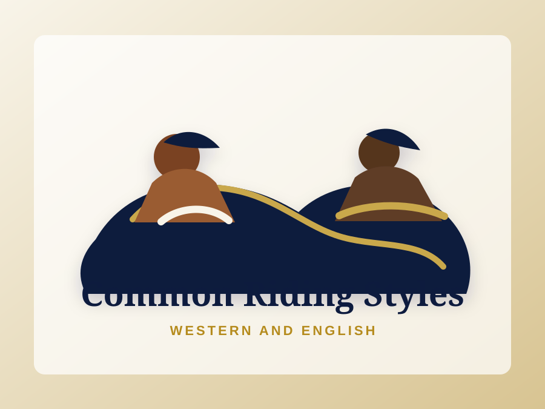

Riding styles developed from the work horses were asked to do, the places they worked, and the sports people built around them. Learn how to recognize common Western and English disciplines and understand what each one is designed to accomplish.

Course Curriculum
Move from the reason riding styles exist into the discipline families students are most likely to see in lessons, shows, ranch settings, and recreational riding.
Course Focus
This course builds the vocabulary students need to talk about riding styles clearly. It keeps the focus on purpose: the job, movement, tradition, and training goals behind each discipline.
Built for learners who are beginning to notice that riding is not one single thing. Each style has its own history, tools, goals, and language.
Ready to Start?
Start with why riding styles developed, then build toward identifying common Western and English disciplines.
Start the Course